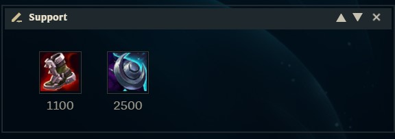
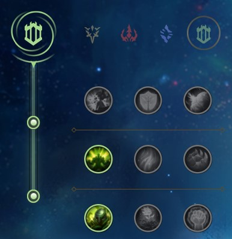
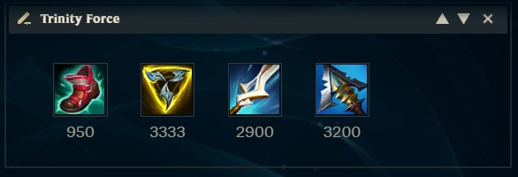
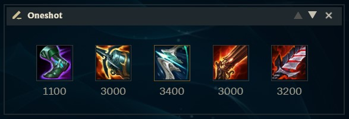
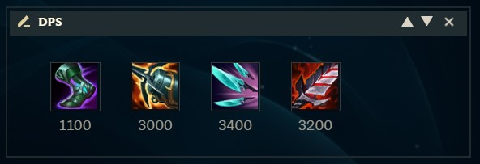
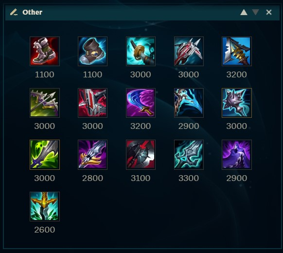
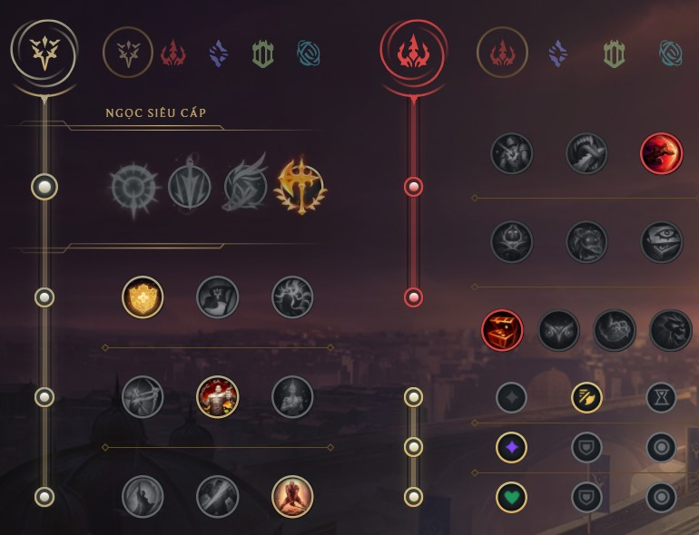
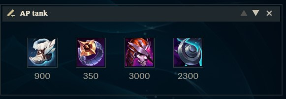

📚 Fú's Build Collection
Đây là nơi mình post những build mà mình nghĩ ra/tìm ra và điá»u tra 🕵️. Sẽ cố gắng update theo patch mới nhất
LƯU Ý:
13.10 sẽ là 1 trong những bản lớn nhất từ trước đến giá», thay đổi game hoà n toà n. Tất cả các build liên quan đến AD, hỗ trợ và sát thủ AD Ä‘á»u sẽ không còn chÃnh xác. Mình sẽ chỉ cáºp nháºt lại trang nà y sau khi đã hiểu rõ hết các thay đổi.
Một số thuáºt ngữ tiếng Anh:
MS (Movement speed): tốc độ di chuyểnengage: mở giao tranh, lao và o,...battlemage: Các tướng pháp sư tầm ngắn, nhiá»u máu. VD: Ryze, Swain, Sylas, Cassiopeia,...burst: dồn dmg trong thá»i gian ngắn, thường hay dùng để phân biệt với DPS (dmg theo thá»i gian dà i)AS: tốc độ đánh
Mục lục
Akali Annie Bel'Veth Bel'Veth Support Caitlyn Cho'Gath Corki Ezreal Graves Hecarim Kai'Sa Kalista Lucian Lux Miss Fortune Nilah Senna Udyr Vayne Yasuo & Yone
Akali 13.8
Bảng ngá»c
Ỡđây mình dùng các bảng tiêu biểu thôi. Thực tế thì ngá»c của Akali có nhiá»u chỗ tuỳ biến theo game, nên các bạn lấy bảng nà o mình chơi tốt là được.
Item
Mình không có vấn Ä‘á» gì với các build hiện tại của Akali. Đây chỉ là ý tưởng của mình khi xem Akali đi lane.Xuyên kháng phép và các chỉ số tank.
Các core item trong hình cho Akali ~43 xuyên kháng phép, 1k HP, 30 giáp và kháng phép, giúp Akali vừa gần như gây sát thương chuẩn trên tướng yếu máu, vừa quá trâu để hạ gục trong combat.
Vá» cuối tráºn, có thể bổ sung thêm AP với Mũ Phù Thuỷ, Trượng Hư Vô hoặc mua thêm Đồng hồ cát, Mũ Trụ Nguyá»n Rủa để cà ng khó chết hơn.Ngá»n đuốc thánh quang do đây là món đồ đỡ nhất trong 4 món tank. Tuỳ theo meta, chúng ta lựa món tank nà o tốt nhất là được.
Annie 13.8
LCK là khu vực đầu tiên chơi Annie, và tất cả khu vực khác copy build Trượng Trường Sinh từ đây.
Mình rất ghét build nà y, vì nó biến Annie thà nh Battlemage, lối chơi không phù hợp và chưa bao giỠxuất hiện trên Annie trong các mùa trước.
Bảng ngá»c
2 bảng tương ứng với 2 cách lên đồ được giải thÃch ngay bên dưới.
Item
Permaburn
Dùng cho các đội hình nhiá»u máu, không thể burst. Aura của Tibbers là m cháºm tất cả kẻ địch xung quanh, và Tibbers liên tục apply Liandry, Thiên thạch Bà ẩn, Phát bắn đơn giản trên tất cả các tướng đứng xung quanh. Tibbers gây dmg liên tục khiến Thiên thạch Bà ẩn hồi chiêu rất nhanh, kÃch hoạt cà ng nhiá»u thiên thạch hơn.
Burst
Đơn giản là mua nhiá»u AP/xuyên kháng phép nhất có thể để combo ám sát. Nếu bạn biết cách kiểm soát mana, có thể thay thế Luden bằng Đai tên lá»a Hextech để dễ engage hơn, tạo yếu tố bất ngá». Đương nhiên, build nà y hoạt động tốt nhất với các tướng yếu máu. Thay Sốc điện bằng Thú săn mồi khi cần thêm MS để engage.
Luôn luôn mua Già y Pháp sư !!!. Annie không quan tâm, không sỠdụng hiệu quả được già y nà o khác.
Bel'Veth 13.8
Bel'Veth có tương tác rất mạnh với Hút máu . Đây là yếu tố được táºp trung nhiá»u nhất trong build của mình.
Bảng ngá»c
Lấy Sẵn sà ng Tấn công nếu cần thêm dmg cho early game. Tuyệt đối không bao giá» lấy Chinh phục . Lấy ngá»c nà y trên Bel'veth đồng nghĩa với troll.Bó tên ánh sáng và Huyết trượng để farm hiệu quả. Mình lựa nhánh phụ Cảm hứng để giúp Bel'veth mua được các trang bị thà nh phần nà y nhanh hơn.
Có thể thay Thị trường Tương lai bằng Thấu thị Vũ trụ để hồi Flash nhanh hơn. Flash là một trong những cách duy nhất giúp Bel'veth sống sót qua early game.
Item

Gươm Suy Vong là item cung cấp nhiá»u dmg nhất cho Bel'veth.Hút máu và khiên. Ná» tá» thủ và Huyết kiếm cung cấp rất nhiá»u chỉ số quan trá»ng trong build nà y dà nh cho Bel'veth.Giáp tâm linh tương tác rất mạnh với build nà y, chỉ cần đối phương có 1 AP là có thể lên được.
Bel'Veth Support 13.9
Bel'Veth hiện tại hoà n toà n có thể chơi ở vị trà hỗ trợ. Ỡbản 13.10, Bel'Veth hỗ trợ sẽ cà ng mạnh hơn.
Bảng ngá»c
Ỡvị trà hỗ trợ, luôn luôn lấy Sãn sà ng tấn công để tăng dmg cho cả bản thân và AD. Có thể đổi sang Giáp cốt nếu muốn chơi theo kiểu all-in.
Item
Vai trò của Bel'Veth ở vị trà hỗ trợ là sá» dụng khả năng cơ động của mình để mở giao tranh bằng W, hút sát thương với E và thoát ra ngoà i. Độ cơ động là sự khác biệt lớn nhất giữa Bel'Veth hỗ trợ so với Leona, Nautilus, Thresh,...Giáp vai Nguyệt thần , mua Solari chỉ khi có giá trị counter các tướng đối phương (Và dụ: Karthus, Gankplank, Fiddlesticks,...).Rìu đen để bổ sung thêm dmg cho team.
Caitlyn 13.8
Nguồn cảm hứng chÃnh cho build nà y lÃ
duoking1 (NA) , một người chơi có rất nhiá»u kiến thức vá» đường dưới.
Bảng ngá»c
Mặc định lấy Nhịp độ chết người , chỉ lấy Bước chân thần tốc với mục Ä‘Ãch huỷ diệt các lane yếu.
Những bạn chưa quen chơi Cait nên chá»n Hiện diện Trà tuệ , nhưng nên từ từ táºp kiểm soát mana để sá» dụng được Hồi máu vượt trội
Item
Ná» tá» thủ là đồ thần thoại mạnh nhất cho Caitlyn, phù hợp với tất cả các yếu tố trong lối chơi của Caitlyn (di chuyển cháºm, thả diá»u, di chuyển nhanh combo 2-3 skill, chống one-shot, hút máu đè lane,...). Đổi sang Móc diệt thuỷ quái khi cần thêm dmg giết tank. Đổi sang Cung phong linh khi cần quay highlight/montage combo Caitlyn oneshot 30 nút (là m ơn đừng lên món nà y).Ma vũ song kiếm , cung cấp nhiá»u MS nhất, DPS chỉ thua Vô cực kiếm , cực kỳ phù hợp với tất cả điểm mạnh, điểm yếu của Caitlyn.
Chogath Battlemage 13.8
Một trong số Ãt tướng có khả năng Quadra flex.
Bảng ngá»c
Thú săn mồi là cách để engage trên các tướng đánh xa. Combo Thú săn mồi + Trượng băng vĩnh cá»u sẽ cho bạn rất nhiá»u cơ hội solokill.Thợ săn tối thượng
Nếu đối phương có nhiá»u melee, chuyển sang dùng Mưa kiếm để dồn dmg bằng E.
Khoảng 1 tháng trước, Gumayusi có chơi Cho'gath đường dưới bằng Thiên thạch Bà ẩn . Nghe có vẻ hợp lý, nhưng thực sự rất troll, vì Thiên thạch không có giá trị gì trong lane và sau early game.
Item
Trượng băng vĩnh cá»u: Setup cho Q để solokill tướng yếu máu. Lưu ý tầm sá» dụng không quá dà i, nên nếu gặp nhiá»u tướng đánh xa thì nên kết hợp Thú săn mồi .Trượng trường sinh: Đáng cân nhắc nếu team mình không có quá nhiá»u tank. Bạn sẽ là mục tiêu số một do kÃch cỡ tướng lớn và rất cháºm. Lên kèm với các món tank, đặc biệt là Thú tượng thạch giáp .KÃnh ngắm ma pháp: Item nà y tăng dmg cho cả sát thương chuẩn.
Corki 13.8
Corki có 2 build, nhưng nhiá»u người hiện mặc định lên 1 build duy nhất. Mình viết bà i nà y để phân biệt các ưu, nhược điểm của cả 2 build.
Bảng ngá»c
Đòn phủ đầu là ngá»c then chốt số 1 của Corki. 1 điá»u đáng tiếc là các ngá»c phụ của nhánh Cảm hứng quá yếu. Thợ săn tối thượng cực kỳ quan trá»ng cho build poke.
Với build crit, dùng nhánh Kiên định để có thêm chống chịu, hoặc nhánh Pháp thuáºt để có thêm AD.

Item
Poke
Rất tốt khi đối đầu với nhiá»u tướng đánh xa. Một điểm hay gây hiểu nhầm cho nhiá»u người chơi Corki là build nà y cần AP.Xuyên kháng phép , vì game gần như không có một món AD nà o cho chỉ số nà y cả.Chuỳ gai Malmortius và Vũ điệu Tá» thần là 2 món đồ thủ tốt nhất cho Corki.Liandry cho Corki, vì nếu gặp tướng nhiá»u máu thì có thể build Crit. Nhưng ở mùa 13, Trượng trường sinh cho các pháp sư quá nhiá»u máu, nhiá»u đến mức Liandry bắt đầu gây nhiá»u dmg hơn Luden . Đây là đồ thần thoại khi bạn gặp Ryze, Anivia, Cassiopeia, Orianna,... lên Trượng trường sinh .Lưu ý: khi mua Luden, thứ tự mua thà nh phần đúng là Lam ngá»c -> Bà chương thất truyá»n -> Gáºy bùng nổ . Ngay cả Faker cũng mua sai :P.
Crit
Dmg đánh thường cao, thÃch hợp khi cần gây DPS lên các tướng melee, trâu bò. Khi các tướng tank có khoảng 3k HP và 150 kháng phép, build poke bắt đầu yếu đi và không còn đóng góp nhiá»u trong combat. Build trên hình hiện tại là combo item có DPS cao nhất cho Corki.
Ezreal 13.8
Có cảm giác như cứ hết 1 quý thì tất cả những người chơi Ezreal sẽ thay đổi build 1 lần cho nó mới lạ. Bà i nà y tổng hợp nhiá»u build của Ezreal và điểm mạnh, điểm yếu của chúng.
Bảng ngá»c
Mặc định là Chinh phục . Nếu build táºp trung nhiá»u và o đánh thường thì có thể đổi sang Sẵn sà ng tấn công .Thợ săn tà i tình , giảm hồi chiêu Thuỷ kiếm . Điểm yếu của nhánh nà y là cần có mạng đầu game để stack. Theo mình, nhánh Pháp thuáºt vẫn ổn định nhất.
Item
Đoản đao Navori: Một trong những item OP nhất sau khi được tân trang lại.
Bởi vì tương tác quá mạnh giữa Ezreal và Navori, mình tin rằng Ezreal không cần phải lên Nước mắt cũng như Manamune nữa, để nhường chỗ cho Lưỡi hái linh hồn . Đây sẽ là combo chÃnh trong tất cả các build được giới thiệu ở đây.
Crit
Phù hợp cho các game nhiá»u melee/tank, táºn dụng thêm các đòn đánh thường, so le với Q.
Sát lực
Build gây nhiá»u dmg nhất trên Q. Dùng build nà y khi bạn chỉ poke trong combat.
Móng vuốt ám muội gây nhiá»u dmg hơn Nguyệt đao trên các tướng từ ~110-120 giáp trở xuống, mặc định lên trong má»i game.
Rất nhiá»u người thắc mắc rằng là m sao Ezreal kÃch hoạt được Móng vuốt . Câu trả lá»i là không :).
Chúng ta không mua item nà y để kÃch hoạt, mà mua bởi vì nó có nhiá»u sát lực nhất game. Và là m ơn đừng bao giá» mua Dạ kiếm Draktharr trừ khi chơi ARAM.
Liandry (???)

Trong soloQ, đôi lúc team pick một đội hình full AD. Đây là tình huống đặc biệt, và cũng là duy nhất, để chúng ta sá» dụng Liandry, đa dạng hoá nguồn dmg trong đội hình. Đương nhiên, các món Xuyên giáp, Sát lực như Serylda sẽ yếu hơn trong build nà y.
Rìu đen để giảm giáp, giúp tăng dmg cho cả team.
Tam hợp kiếm
Sá» dụng Tam hợp kiếm đồng nghĩa với chuyện bạn không thể mua Navori , đổi lại thì chúng ta sẽ có thêm HP, chỉ số mà build Navori gần như không thể có cho đến Ãt nhất là món 5. Build nà y tốt khi gặp đội hình nhiá»u tuóng lao và o. Và dụ như Kennen, Viego, Ahri.Gươm Suy Vong khi gặp các tướng tank lên Trái Tim Khổng Thần .
Graves 13.8
Bảng ngá»c
Bước chân thần tốc là ngá»c then chốt ổn định nhất cho cả Graves đi lane và đi rừng. Nếu bạn chơi Graves sát lực, có thể thay thế bằng Sốc điện hoặc Đòn phủ đầu .
Do game hiện tại đặt nặng việc kiểm soát mục tiêu, mình đánh giá rất cao Thuỷ thượng phiêu , không chỉ cho Graves mà hầu như tất cả các tướng đi rừng.
Với các build không phải Sát lực, có thể cân nhắc nhánh Kiên định để lấy chống chịu miễn phÃ.
Item
Do cơ chế reload, Graves không nên lên quá nhiá»u AS. Các bạn có thể thấy mình không Ä‘á» xuất Già y cuồng nộ trong build nà o cả. Nếu như cả Tabi và Già y thuỷ ngân Ä‘á»u không phù hợp, có thể giữ Già y 1 và ưu tiên lên đồ lớn.
Kiếm Âm u . Theo mình, item nà y ngoà i tương tác khá mạnh với Mắt thây ma thì không có nhiá»u tác dụng lắm. Chỉ số của Kiếm âm u quá yếu, và tất cả các build của Graves Ä‘á»u cần khoảng 2 item để bắt đầu mạnh. Nếu như đã quen mua Kiếm âm u thì các bạn có thể mua, nhưng mình cực kỳ không khuyến khÃch.
Sát lực
Build bị nerf nặng nhất trên Graves, do Nguyệt đao mất Hút máu toà n phần. Quan điểm của mình là Graves sát lực bắt buộc phải mua Rìu mãng xà để farm bình thường.
Negan
Tên bắt nguồn từ nhân váºt Negan Smith trong The Walking Dead, do streamer LS (?) đặt cho build nà y. Khi mới xuất hiện, build nà y táºp trung xoay quanh các item hút máu. á» thá»i điểm hiện tại (mùa 13), Rìu đen theo mình là item quá quan trá»ng cho Graves. Có thể delay Rìu đen xuống món 2-3, hoặc lên sau Bó tên ánh sáng .
Vô cực kiếm . Tuy nhiên, bạn cần có thêm các món crit để tối đa hoá nội tại tăng 35% crit dmg.Navori là item rất thú vị, đáng cân nhắc vì cả 3 chiêu cơ bản Ä‘á»u rất quan trá»ng với Graves.
Chuỳ hấp huyết
Streamer
Tarzaned (NA) là người đầu tiên lên build nà y theo trà nhớ của mình. Điểm mạnh nhất của build là , khi kết hợp với
Rìu đen , cho Graves 700 máu, 8% hút máu toà n phần, nội tại kÃch hoạt hồi máu và rất nhiá»u hồi chiêu. Dùng build nà y khi đối phương có nhiá»u sát thủ, hoặc khi trong team đã có tướng carry để bạn có thể hy sinh dmg và lên build nà y.
Hecarim 13.8
Bảng ngá»c
Quan điểm cá nhân của mình là không nên lấy Tăng tốc pha do Hecarim cần ưu tiên dmg.
Item
Mình nghĩ không cần giải thÃch quá nhiá»u vá» Rìu đen . Hecarim cần một món dmg nữa để khai thác nội tại giảm giáp, và Manamune theo mình là lựa chá»n tốt nhất. 5 lựa chá»n đồ thần thoại gồm:
Jhin 13.8
Mình đã viết giữa chừng 1 bà i vỠJhin, nhưng thực sự con tướng nà y quá vô dụng =)))). Nếu pro play pick lại Jhin thì có thể mình sẽ viết.
Kai'Sa 13.8
Bà i nà y táºp trung vá» build on-hit, một build Ãt được nhiá»u người để ý
Bảng ngá»c
Nhịp độ chết người tất nhiên sẽ là bảng ngá»c nhiá»u DPS nhất. Nhưng có thể cân nhắc Mưa kiếm với các lane khó.
Item
Các build hiện tại của Kai'Sa lên nhiá»u AD để táºp trung burst các tướng yếu máu. Build on-hit có DPS cao hơn, dmg lai giữa AD, AP và sát thương chuẩn, khiến đối phương rất khó đối phó. Tác dụng chÃnh của build nà y là chống tank.
Kalista 13.8
Bảng ngá»c
Một trong số những con tướng muốn chết nhất game. Vị máu + Thu tháºp nhãn cầu hoặc Kiểm soát điá»u kiện + Lan trà n là phù hợp nhất với lối chơi nà y. Lấy Huyá»n thoại: Kháng hiệu ứng khi hỗ trợ đối phương là Leona, Nautilus, Morgana,...
Item
Gươm Suy Vong: Mình Ä‘á»c đi Ä‘á»c lại món đồ nà y mà vẫn không hiểu tại sao không ai lên món nà y cho Kalista. Gươm Suy Vong và Kalista tháºt sự là một cặp trá»i sinh: cần snowball, gây sát thương lớn khi bắt đầu combat (%HP hiện tại) sau đó kết liễu bằng rút giáo, tăng tốc độ chạy, hút máu,... Món đồ rush mạnh nhất cho Kalista.Guinsoo: Đôi lúc trong các game của mình, có người không lên Guinsoo. Đây là item nhiá»u dmg nhất trên Kalista, không có ngoại lệ nà o.
Lucian 13.8
Một vị tướng có lối chơi khá độc đáo. Có rất nhiá»u cách build khác nhau cho Lucian, nhưng thường nhiá»u người chỉ sá» dụng mặc định 1 build duy nhất. Hy vá»ng bà i nà y sẽ giúp bạn nháºn ra nhiá»u lựa chá»n hơn.
Bảng ngá»c
Không bánh quy
Item
Các build sau đây chỉ là một và i mẫu nhất định. Cách tốt nhất để build Lucian là thÃch ứng theo từng game.

Khi combo với một tướng hỗ trợ trong bộ ba Nami, Sona, Milio, đây là build burst mạnh nhất.Navori rất mạnh trên Lucian, và đặc biệt mạnh cho những bạn biết huỷ động tác nội tại với E.
Build nà y hiển nhiên được dùng để chống tank, DPS cao nhất cho các đòn đánh thường.

Thường thì mình sẽ không pick Lucian trước rồi để bị counter. Tuy nhiên, khi gặp quá nhiá»u tướng engage, có thể cân nhắc Ná» tá» thủ . Đương nhiên, lên item nà y hy sinh rất nhiá»u dmg, nên chỉ lên khi bạn chơi cùng bộ ba hỗ trợ để có thêm dmg.

Lux hỗ trợ 13.8
Bà i nà y chỉ nói vá» Lux hỗ trợ, hoà n toà n không liên quan đến Lux đường giữa.
Bảng ngá»c
Đây là bảng ngọc gây nhiều dmg nhất cho Lux. Có thể tuỳ chỉnh các ngọc phụ cho phù hợp với game khi cần
Item
Chỉ có một món đồ thần thoại duy nhất đúng cho Lux hỗ trợ, đó là Trát lệnh đế vương . Lý do:Shurelya, Trượng băng vĩnh cá»u, Solari,... ), tốt nhất nên pick tướng khác có thể sá» dụng tốt các món nà y hơn.
Miss Fortune 13.8
Lại một AD khác có đa dạng các build, luôn luôn ở tier S trở lên trong mọi meta từ năm 2021.
Bảng ngá»c
Sẵn sà ng tấn công là lựa chá»n tốt nhất cho Crit MF. MF thông thường không cần đến 6 AA để hạ các carry đối phương.
Trong các game có sát thủ, có thể kết hợp nhánh Kiên định với NỠtỠthủ .
Bảng ngá»c chÃnh cho build Sát lực, táºp trung và o poke và chiêu cuối.
Bảng ngá»c dà nh cho MF AP.
Có một con tướng miễn nhiễm với poke ở đường dưới, đó là Jhin (Bước chân thần tốc , Già y + 4 bình máu, MS cao,...). Đặc biệt trong lane nà y, chuyển sang Đòn phủ đầu và chơi full scaling (táºp trung hoà n toà n cho mid/late game).
Item
Crit
Huyết kiếm hút máu trên cả nội tại của MF. Đây là món đồ huyá»n thoại mạnh nhất có thể mua.Navori có thể cho MF Q mỗi 1.5s. Item nà y out DPS Vô cực kiếm .Nguồn ảnh: mnogi
Ná» tá» thủ khi gặp quá nhiá»u sát thủ. Build nà y khá giống Negan Graves.
Sát lực
Kiếm ma Youmuu cung cấp quá nhiá»u MS, cho phép ta bá» qua cả Già y và tiết kiệm ~1k và ng cho đồ lớn.Nguyệt đao bị nerf khiến MF phải dùng Rìu mãng xà để farm và hút máu. Rìu đen stack trên từng phát đạn của chiêu cuối.
Liandry + AD
Tiá»n thân của build AP. Build nà y khai thác 2 yếu tố chÃnh:Liandry, Thiên thạch bà ẩn, Thiêu rụi, Phát bắn đơn giản
AP
Bản 12.21 buff AP scale của chiêu E. Từ bản nà y, mình không còn dùng build Liandry ở trên nữa.Động cơ vũ trụ nếu cần thêm slow, và Trượng Hư vô nếu cần dmg.Mũ trụ nguyá»n rủa: chỉ mua khi đối phương có rất nhiá»u HP (Sion, Cho'gath, Zac,...).Lưu ý: tác dụng chÃnh của build AP là đa dạng hoá nguồn dmg, chỉ sá» dụng khi team không có AP/khi đi hỗ trợ.
Nilah 13.8
Một trong những tướng tiệm cáºn với tier S nhưng đang bị hãm lại bởi Jinx và Xayah (13.8)
Bảng ngá»c
Nilah là tướng rất phụ thuộc và o chỉ số crit, vì váºy có thể lấy Thợ săn tiá»n thưởng để giúp Nilah stack 100% crit cà ng nhanh cà ng tốt.

Một nhánh phụ khác có thể lấy là Kiên định, với Kiểm soát điá»u kiện và Tiếp sức
Item
Cung phong linh: Trang bị thần thoại phù hợp nhất, giúp Nilah dễ tiếp cáºn AD đối phương.Đoản đao Navori: Item tier S+ dà nh cho Nilah, Nilah rất cần sá» dụng skill trong combat.Ma vũ song kiếm: Lại một trang bị hoà n hảo khác cho Nilah, cung cấp gần như tất cả chỉ số cần thiết.
Senna 13.8
Một trong những build lạ nhất của cả trang web nà y.
Bảng ngá»c
Bước chân thần tốc là lựa chá»n ổn định nhất, phù hợp với cách trade của Senna trong lúc đi lane và cách giữ vị trÃ, gây dmg trong phần còn lại. Với những người mới chơi Senna thì nên lấy ngá»c nà y 100% game.Chinh phục ) phát huy tác dụng trong một và i trường hợp rất nhất định.
Item 1113p
Già y thép gai: Từ khoảng 2 năm trở lại, tất cả Senna mặc định lên Già y bạc .
Lý do lớn nhất mà má»i người có thể nghĩ ra là chạy nhanh để "giữ vị trÃ, né chiêu".
Không có AD nà o không cần giữ vị trÃ, tại sao không có AD nà o khác lên Già y bạc ?
Thay vì lên thêm 15 MS và tin và o khả năng phản xạ của bản thân, thì một cách tư duy tốt hơn là lên thẳng giáp, để ngay cả khi trúng chiêu vẫn không nháºn nhiá»u dmg.
Mình rush già y 2 trong tất cả game Senna, vì các pha trade đầu game với Senna hầu như chỉ dừng lại ở farm linh hồn, nên mình muốn MS và chống chịu để lui vỠan toà n nhất.
Đối với một và i game nhất định, Senna sẽ cần lên Già y thuỷ ngân .
Fasting Senna
2 món carry tốt nhất cho Senna là Móc diệt thuỷ quái và Navori . Cân nhắc NỠtỠthủ, Huyết kiếm và cả các món tank nếu cần thiết.
Support Senna
Solari: giải thÃch tương đối dà i dòng. Tất cả má»i người Ä‘á»u biết thừa rằng điểm yếu lớn nhất của Senna là quá má»ng, cực kỳ dễ chết khi bị engage. Hơn nữa, do thường được đánh ở vị trà hỗ trợ (cho 1 AD khác), cả 2 Ä‘á»u trở thà nh miếng mồi cho đối phương. Chỉ cần thua một chút, và để AD đối phương có lợi thế, Senna và AD của mình sẽ thà nh mục tiêu dive liên tục. Hầu như các tướng lao và o Ä‘á»u không thể vượt qua lớp khiên của Solari. Thá»i gian hồi 90s ngắn hơn đa số chiêu cuối của các tướng ở giai đoạn 1 đồ. Cộng thêm 200 HP, 30 giáp và 30 kháng phép, Senna trở nên rất khó bị hạ gục, nhưng vẫn gây sát thương tốt nhá» lượng sát thương cơ bản rất cao ở chiêu Q và nội tại. Một điểm nữa cần lưu ý là Solari khá giống với các lựa chá»n Bước chân thần tốc cũng như Già y thép gai , Ä‘á»u giảm thiểu thiệt hại và rủi ro khi Senna bước lên trade trong lane để farm linh hồn.Móc diệt thuỷ quái: Giả sá» như đối phương không có tướng lao và o, hoặc bạn đang có quá nhiá»u lợi thế và thực sự không cần đến Solari, thì có thể lựa chá»n item nà y để gây nhiá»u DPS nhất trong combat.Gươm Suy Vong: Do không được farm giống như các AD khác, Senna cần lên những món đồ mạnh nhất 1 cách độc láºp. Gươm Suy Vong không chỉ gây dmg ổn định, mà còn cung cấp hút máu, tương tác rất tốt với Solari.Guinsoo: Do không được farm, Guinsoo là lựa chá»n tốt hơn dà nh cho Senna hỗ trợ so với Navori (rẻ hơn 700g). Có thể swap lại ở món 6.
Câu há»i thường gặp: Tại sao lại không mua...
Sát lực? Troll :). Sát lực tăng giá trị theo level, và không phải là lựa chá»n dà nh cho vai trò có level thấp nhất trong game. SKill của Senna Ä‘á»u có thá»i gian hồi rất lâu nếu thiếu AS, nên Senna cũng không hưởng lợi quá nhiá»u từ việc mua Sát lực.Đại bác liên thanh? Vô dụng. Nếu farm linh hồn đúng cách, Senna rất dễ dà ng đạt tầm đánh 650+ và o cuối game. Dmg và on-hit luôn là những lựa chá»n tốt hơn, thay cho việc tăng tầm đánh mỗi 4-5 (100 stack TÃch Điện).Trái tim khổng thần? Mình không còn lá»i nà o để nói :(. Há»c cách người Hà n chơi game, không phải cách người Hà n build. Still <3 Keria.
Udyr 13.8
Udyr có 2 lối chơi chÃnh là max R (Phượng hoà ng) và max Q (Gấu). Bà i nà y sẽ cố gắng phân tÃch cả 2 lối chơi, nhiá»u ý tưởng đến từ streamer Aribo (EUW).
Bảng ngá»c
Udyr có lối chơi khá tương đồng với Hecarim nên cũng có bảng ngọc khá giống.
Đối với Udyr top, có thể sá» dụng Sẵn sà ng tấn công để hỗ trợ burst cho Gấu, hoặc Quyá»n năng bất diệt khi build tank Phượng hoà ng.
Item
Phượng hoà ng
AOE và là m cháºm xung quanh, thÃch hợp cho các game thiếu AP hoặc có nhiá»u melee.

Già y bạc: Do lối chơi của Udyr, MS là một trong những chỉ số quan trá»ng nhất. Chỉ nên đổi sang Già y thép gai hoặc Già y thuỷ ngân trong những game thực sự có tác dụng lớn.Phong ấn hắc ám để có cơ hội nâng cấp thà nh Mejai . Mejai không chỉ có AP mà còn cho 100 HP và 10% MS cộng thêm, tất cả chỉ với 1600g.Mũ trụ nguyá»n rủa: Core item trong các build lên đồ thần thoại tank. Hãy nhớ, đối với Udyr, AP không chỉ là dmg mà còn là chống chịu thông qua lớp khiên W, và chúng ta luôn max W 2nd. Lượng dmg từ item nà y giúp Udyr clear rừng và solo rồng, sứ giả nhanh hơn nhiá»u. Đặc biệt, từ sau khi được rework, Udyr có thể kÃch hoạt nâng cấp R (skill nhiá»u dmg nhất) từ khoảng cách rất xa.Jak'sho: Có lẽ là món thần thoại phù hợp nhất dà nh cho Udyr. Không giống như các tướng khác, cách engage của Udyr đơn giản là chạy bộ và o, nên rất dễ bị đối phương poke và kÃch hoạt Jak'sho .
Động cơ vũ trụ vừa được buff. Đây là một món đồ khá phù hợp cho Udyr, giúp bắt kịp các tướng đánh xa.
Điểm yếu lớn nhất của lối lên đồ ở trên là có 2 core item. Trong một và i game, bạn sẽ cần phải có 2 món tank thần thoại để counter một và i tướng cụ thể. Và dụ: team đối phương có Jax, Cassiopeia và Kog'maw. Sẽ là lợi thế rất lớn trong các pha combat nếu như bạn có thể lên Tim băng và Giáp thiên nhiên . Nếu như lên đồ theo build bên trên, 2 món nà y sẽ lần lượt đẩy xuống 3 và 4, và có thể khiến bạn thua các pha combat mid game.
Để khắc phục vấn Ä‘á» nà y, chúng ta có thể sá» dụng 2 món đồ thần thoại khác là Tam hợp kiếm (tăng MS, bắt kịp các tướng đánh xa) và Búa rìu sát thần (chống tank, hồi máu giữa combat). Udyr sá» dụng rất tốt Thuỷ kiếm , giúp việc clear rừng ở đồ đầu tiên nhanh hơn, và 1v1 tốt hơn.
Gấu
- Chuỳ hấp huyết: counter các sát thủ, hoặc những tướng đánh gần Ãt HP. Các trang bị thà nh phần của item nà y rất mạnh, phù hợp cho việc snowball đầu game.Chuỳ phản kÃch: giữ chân các tướng đánh xaBúa rìu sát thần: out dmg 2 món trên nếu như đối phương mua nhiá»u HP. Rìu đen .Rìu mãng xà : phù hợp cho Udyr top với hút máu, nhiá»u AD, clear lÃnh, giúp 1v1 và đẩy lẻ tốt hơn.
Vayne 13.8
Không hẳn là build mới, chỉ nói vá» một và i thứ có thể nhiá»u người không biết.
Bảng ngá»c
Vayne đã có đủ DPS với W, nên lấy nhánh Kiên định để sống sót tốt hơn.
Item
Mặc định lên
Guinsoo , cháºm nhất là món 3, đừng nghe ai nói khác.
Ma vũ song kiếm vÃ
Đao tÃm là 2 món đồ huyá»n thoại mạnh nhất trên Vayne xét vá» DPS.
Gươm Suy vong Ãt dmg hơn cả 2 món trên với các mục tiêu < 3200 HP, và không cung cấp gì khác ngoà i dmg (ta không cần đến hút máu do đã có
Ná» tá» thủ vÃ
Huyết kiếm ). Không bao giỠlên món nà y.
Nguồn ảnh: mnogi
PS: Từ sau bản 13.7, Vayne max Q rồi tới W.
TheVoices (Yasuo & Yone) 13.8
Nhà tà i trợ chÃnh cho build nà y lÃ
Dzukill (EUW) , một trong những 2-trick anh em gió hay nhất thế giới.
Dzukill bắt đầu sỠdụng build nà y từ khoảng tháng 3/2023. Hiện tại, nếu và o opgg của Dzukill sẽ thấy anh đã chuyển sang build khác, nhưng mình nghĩ vẫn đáng để giới thiệu.
Bảng ngá»c
Bảng mặc định: Nhịp độ chết người và Kiên định. Thay đổi các ngá»c ở nhánh phụ tuỳ theo lane.
Item
à tưởng chÃnh của build nà y là thay thế Ná» tá» thủ bằng Huyết kiếm . Việc nà y cho phép TheVoices mua các món thần thoại khác, các món chÃnh là Jak'sho, Ngá»n đuốc thánh quang, Găng tay băng giá, Nguyệt đao .